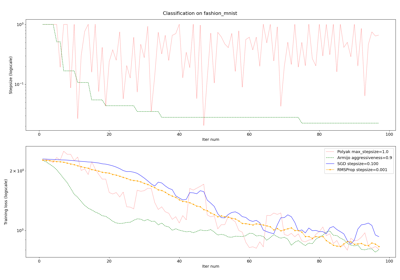

Example gallery
To clone the repository and the examples, please run:
$ git clone https://github.com/google/jaxopt.git
or download this zip file.
To install the libraries that the examples depend on, please run:
$ pip install -r examples/requirements.txt
Constrained optimization

Non-negative matrix factorizaton (NMF) using alternating minimization.
Non-negative matrix factorizaton (NMF) using alternating minimization.


Deep learning


Comparison of different SGD algorithms.
Comparison of different SGD algorithms.

Fixed point resolution
Anderson acceleration in application to Picard–Lindelöf theorem.
Anderson acceleration in application to Picard–Lindelöf theorem.

Anderson acceleration of block coordinate descent.
Anderson acceleration of block coordinate descent.
Anderson acceleration of gradient descent.
Anderson acceleration of gradient descent.

Deep Equilibrium (DEQ) model in Flax with Anderson acceleration.
Deep Equilibrium (DEQ) model in Flax with Anderson acceleration.